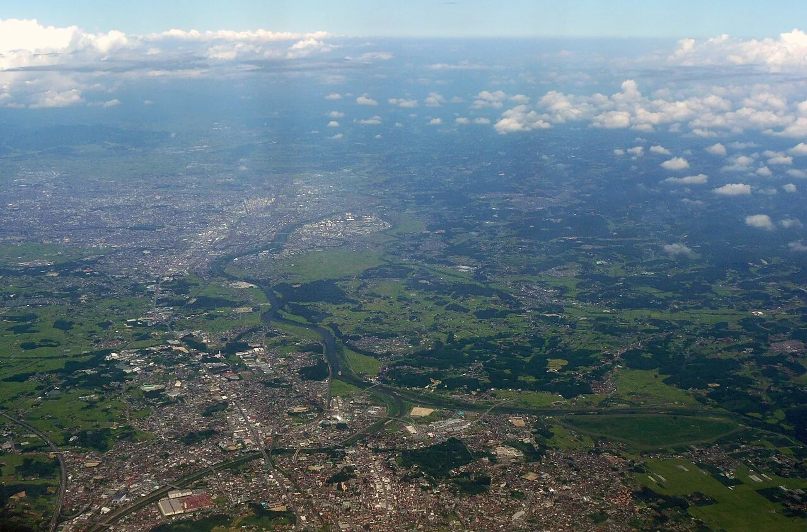

The town where Ultraman plays on the loudspeakers
Nearly every Japanese town runs a daily chime over the loudspeakers of its municipal emergency broadcast network. Usually it is a children's song or a plain melody. In Sukagawa, Fukushima Prefecture, what comes out of the speakers at 07:00 is the theme from Ultraseven, and what comes out at 17:30 is the theme from Return of Ultraman. This is not a festival or a one-off event. It is the town's routine equipment test, and it has been running since 2014. Sukagawa is the birthplace of Tsuburaya Eiji, the special-effects director behind Godzilla and Ultraman, and it has since signed a sister-city agreement with a fictional nebula. This guide covers the chime, the 13 statues, the two free museums, and how to get there.

The chime: what plays, and when
Sukagawa's municipal disaster-prevention radio system broadcasts a melody three times a day. The city's own page confirms the schedule — 07:00, 12:00 and 17:30 — and states the purpose: verifying that the equipment works, so that a genuine evacuation order or earthquake early warning will reach residents. The city page calls it simply "a melody chime" and does not name the pieces.
The song titles come from Tsuburaya Productions, the rights holder, which announced the arrangement on its official news channel in February 2014.
| Time | What plays | Note |
|---|---|---|
| 07:00 | The Ultraseven themeウルトラセブンの歌 — Ultraseven no Uta | Composed by Fuyuki Tōru |
| 12:00 | The Sukagawa city song須賀川市歌 — Sukagawa Shika | Not an Ultra piece — the civic anthem |
| 17:30 | The Return of Ultraman theme帰ってきたウルトラマン — Kaettekita Ultraman | Composed by Sugiyama Kōichi |
Broadcasting began as a test transmission on 1 February 2014, marking the sister-city agreement described below. At the time Tsuburaya Productions reported that the network reached the whole city through 197 outdoor loudspeaker stations, plus 220 individual receivers in evacuation facilities and fire stations. So if you are anywhere in Sukagawa at 17:30, you will hear it outdoors, for free, without needing to be anywhere in particular.
First, you will often read that 07:00 was chosen because Seven matches the hour, and 17:30 because Return of Ultraman matches children returning home. It is a neat story and it circulates widely, but neither the city nor Tsuburaya Productions states it in any source we could find. Treat it as folklore, not fact. Second, some municipalities shift their evening chime with the seasons; Sukagawa's page shows 17:30 without mentioning seasonal variation, but it also never says "year-round." If your visit depends on hearing it, allow for the possibility that the time moves.
Why a Japanese town broadcasts music at all
The system is the 市町村防災行政無線 (shichōson bōsai gyōsei musen) — the municipal disaster-prevention administrative radio network, operated by cities, towns and special wards across Japan. Loudspeakers on poles carry evacuation orders, tsunami warnings and earthquake alerts.
The daily music exists because the speakers have to be tested. If a speaker has been knocked out by lightning or damaged by birds, nobody finds out during an actual emergency. Takarazuka's city government puts it plainly: playing music every day is how they check the speakers are still working. Sukagawa's page gives the same reasoning. The chime is, formally, a diagnostic.
A second function accumulated on top. In many towns the evening chime tells children it is time to go home — Kawaguchi in Saitama has broadcast Yūyake Koyake for that purpose since 1981, and adjusts the time through the year to follow sunset. Because each municipality chooses its own piece, the result is a nationwide patchwork of civic taste. Sukagawa simply took that freedom further than most.
Tsuburaya Eiji, born here in 1901
Tsuburaya Eiji (円谷英二) was born on 7 July 1901 in Sukagawa, then a town in Iwase District, Fukushima Prefecture. He was born Tsumuraya Eiichi (圓谷英一). He became Japan's foremost special-effects director — the visual architect of the original Godzilla and the creator of the Ultra Series — and founded the company that became Tsuburaya Productions. In Japan he is routinely called the god of tokusatsu (特撮の神様), tokusatsu being the practical-effects tradition of suits, miniatures and optical work that Japanese monster film is built on. He died on 25 January 1970.
That birthplace is the entire reason for everything else in this guide. Sukagawa is not a town that licensed a character; it is the town the man came from.
The sister-city treaty with M78
On 5 May 2013 — Children's Day — Sukagawa signed a sister-city agreement with M78 Nebula, the Land of Light (M78星雲 光の国), the fictional home world of the Ultra heroes. The ceremony took place at the Sukagawa Peony Garden. It was signed by Mayor Hashimoto Katsuya on one side, and on the other by the Father of Ultra, commander of the Space Garrison.
The timing was not arbitrary. Tsuburaya Productions had been running relief work in the disaster-hit Tōhoku region through its Ultraman Fund after the 2011 earthquake and tsunami; 2013 was the company's 50th anniversary; and 2014 was Sukagawa's 60th year as a city. The municipality treated the agreement as an image strategy, and it has been fully committed since — including a companion virtual town, Sukagawa-shi M78 Hikari no Machi, whose online resident registry has passed ten thousand people. The city carried out a formal review of the partnership's economic and social effects in 2017 and published a summary.
What to actually see
Everything below is free to enter. Both museums close on Tuesdays and Wednesdays, which catches visitors out — do not plan a midweek trip without checking.
Taimatsu-dōri, the statue street
The street's real name is Taimatsu-dōri (松明通り); "Ultraman Street" is a nickname. Along roughly 900 m to 1 km of pavement between Kitamachi and Kami-Kitamachi stand 13 statues of Ultra heroes and kaiju. They accumulated over time: three — Mother of Ultra, Ultraman Ace and Ultraman Taro — were added on 12 November 2016, bringing the count to eleven, and monument benches of Pigmon and Kanegon were unveiled on 11 November 2017 to make thirteen.
Confirmed figures include Ultraman, Ultraseven, Zoffy, Ultraman Jack, Ultraman Ace, Ultraman Taro and Mother of Ultra, along with the kaiju Gomora, Eleking, Zetton and Bemstar, plus the Pigmon and Kanegon benches. The total of thirteen is stated by Fukushima's prefectural tourism association rather than by the city itself, and we could not confirm whether anything has been added since 2017.
The Tsuburaya Eiji Museum
| Detail | Information |
|---|---|
| Where | 5th floor of tette, Sukagawa Citizens' Exchange Centre須賀川市民交流センター tette · 須賀川市中町4-1, 〒962-0845 |
| Opened | 11 January 2019 |
| Hours | 09:00–17:00 |
| Closed | Tuesdays and Wednesdays; 29 Dec – 3 Jan; plus tette's building-wide closure on the third Tuesday of each month |
| Admission | Free (special exhibitions excepted) |
| Inside | Four zones: the Eiji Chronicle Box, the Network Wall, the "Imagination Atelier" — which displays a suit of the original Godzilla — and a Tokusatsu Studio recreating the Toho lot in miniature |
| Phone | 0248-73-4407 (tette) |
The Sukagawa Tokusatsu Archive Centre
This one is the serious institution. Opened on 3 November 2020, the municipal Sukagawa Tokusatsu Archive Centre (須賀川特撮アーカイブセンター) exists to collect, preserve, restore and research the physical materials of Japanese special effects — it holds roughly 12,000 items, displays miniatures and models permanently, and includes a library and a restoration workshop. Admission is free; hours are 09:00–17:00 with last entry at 16:45; it closes Tuesdays and Wednesdays (moving to the next weekday when those fall on a public holiday) and over the new year. Address: 須賀川市柱田字中地前22, 〒962-0302, phone 0248-94-5200. The building has accessible parking, a step-free entrance and lift, an accessible toilet, loan wheelchairs and a nappy-changing table.
We could not load the Archive Centre's own website (it returned a 403 error to us), so the hours, closing days and last-entry time above come from the city's official facility page and Fukushima's prefectural tourism association rather than from the centre itself. Individual visitors appear not to need a reservation while groups of ten or more do, but we could not verify that on a primary source. It is a 20–25 minute drive from the station with barely any bus service — worth one phone call before committing the trip.
The city hall
Sukagawa's city hall, opened on 8 May 2017, is worth a detour for how far the theme is carried into ordinary municipal architecture. The plaza in front is called the Plaza of Light and holds a Father of Ultra monument; the street lamps carry Mother of Ultra and Ultraman Taro; two of the citizens' meeting rooms are Ultraman-designed.
Getting there
| Leg | How | Time |
|---|---|---|
| Tokyo → Kōriyama | Tōhoku Shinkansen, Yamabiko or Nasuno | About 1 h 15 – 1 h 40 depending on service |
| Kōriyama → Sukagawa | JR Tōhoku Main Line, no change | About 13 minutes, ¥253 |
| Sukagawa Stn → tette | Local bus to Sukagawa Nakamachi, then 2 min on foot | About 7 min by bus, or about 20 min walking |
| By car | Tōhoku Expressway, Sukagawa IC | About 10 min to tette; 20–25 min to the Archive Centre |
tette has 72 parking spaces including four accessible bays at ¥300 per hour, with the first two hours free for people using the building; the Midorigaoka Park Kami-Kitamachi car park (160 spaces) is free. For the Archive Centre, note that the local bus runs on weekdays only with two services out and one back — in practice you want a car or a taxi.
Some links above are affiliate links. We may earn a commission at no extra cost to you. We only list services we'd use ourselves.
Other towns with unusual chimes
Once you know the chime exists, you start noticing what different towns chose. Two are confirmed on the municipalities' own websites.
| Town | What plays | Why |
|---|---|---|
| Tateyama, Chiba館山市 | "Forever Love" by X Japan — 35 seconds at 17:00, on Fridays, Saturdays, Sundays and public holidays, and on 20 November | YOSHIKI, who wrote it, is from Tateyama. Broadcasting began on Christmas Eve 2012; 20 November is his birthday |
| Takarazuka, Hyōgo宝塚市 | "Sumire no Hana Saku Koro" weekdays at 17:00; the Astro Boy theme on Saturdays and Sundays at 12:00 | Home of the Takarazuka Revue, whose signature song it is, and of Tezuka Osamu. Some districts differ in time and tune |
| Minamisanriku, Miyagi南三陸町 | Reported to broadcast an arrangement of the Neon Genesis Evangelion opening theme | Its composer, Satō Hidetoshi, came from the former town of Utatsu, now part of Minamisanriku. Media-reported — we could not confirm this on the town's own site |
The Japanese you'll actually use
| Japanese | Reading | Meaning |
|---|---|---|
| 防災行政無線 | bōsai gyōsei musen | disaster-prevention administrative radio — the loudspeaker network |
| チャイム | chaimu | chime — what the daily broadcast is called |
| 特撮 | tokusatsu | special effects — the practical-effects tradition Tsuburaya built |
| 怪獣 | kaijū | monster / giant creature |
| 姉妹都市 | shimai toshi | sister city — including, here, with a nebula |
| 光の国 | Hikari no Kuni | Land of Light — the Ultra heroes' home world |
| 入館無料 | nyūkan muryō | free admission |
| 休館日 | kyūkanbi | closing day — check this one before you travel |
| 火曜・水曜定休 | kayō · suiyō teikyū | closed Tuesdays and Wednesdays |
Want these to stick? The free JLPT battle quiz drills travel vocabulary like this with spaced repetition.
Sukagawa fits a wider pattern of towns built around a creator or a series: anime pilgrimage (seichi junrei) →, Evangelion in Hakone →, the One Piece statues of Kumamoto →, and character manhole covers →. Planning the region? Our free Fukushima prefecture guide →.
Common questions
Q. Does Sukagawa really play Ultraman music over its public loudspeakers?
A. Yes. According to Tsuburaya Productions, the Ultraseven theme plays at 07:00 and the Return of Ultraman theme at 17:30, with the Sukagawa city song at noon. The city's own page confirms the three broadcast times and explains that the daily melody exists to verify the emergency equipment works.
Q. When did it start?
A. Broadcasting began as a test transmission on 1 February 2014, commemorating the city's sister-city agreement with M78 Nebula, the Land of Light.
Q. Where do I need to be to hear it?
A. Anywhere outdoors in Sukagawa. Tsuburaya Productions reported the network covering the whole city through 197 outdoor loudspeaker stations when the broadcasts began.
Q. Why is Sukagawa the Ultraman town?
A. Tsuburaya Eiji, the special-effects director behind the original Godzilla and the creator of the Ultra Series, was born there on 7 July 1901.
Q. Is the sister-city agreement with M78 real?
A. It is a real municipal agreement with a fictional counterpart. Sukagawa signed it on 5 May 2013 at the Sukagawa Peony Garden; the signatories were the city's mayor and the Father of Ultra. The city later reviewed the partnership's economic and social effects and published a summary in 2017.
Q. How many Ultraman statues are there?
A. Thirteen, along Taimatsu-dōri between Kitamachi and Kami-Kitamachi, over roughly 900 m to 1 km. Three were added in November 2016 and the Pigmon and Kanegon benches in November 2017. The figure of thirteen comes from Fukushima's prefectural tourism association.
Q. What does it cost to visit the museums?
A. Both the Tsuburaya Eiji Museum and the Sukagawa Tokusatsu Archive Centre are free. Both close on Tuesdays and Wednesdays, and the museum also closes on tette's building-wide third-Tuesday closure.
Q. How do I get to Sukagawa from Tokyo?
A. Take the Tōhoku Shinkansen to Kōriyama (about 1 h 15 to 1 h 40), then the JR Tōhoku Main Line to Sukagawa, about 13 minutes and ¥253. The Tokusatsu Archive Centre is a further 20–25 minutes by car and is poorly served by bus.